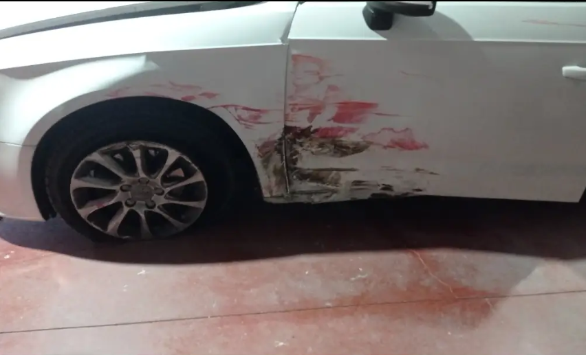
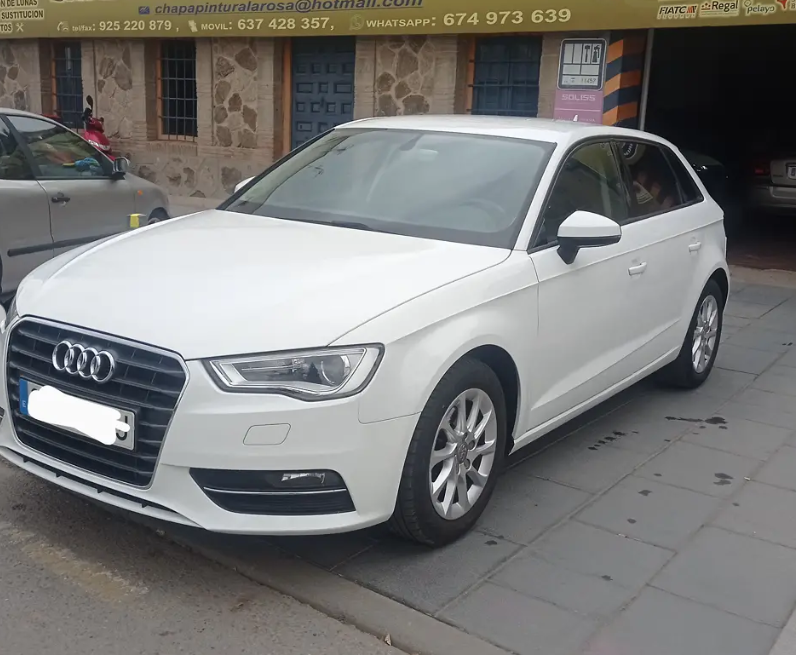

Paseo de la Rosa 38 · Toledo
De golpe a impecable.
Reparamos, pintamos y devolvemos presencia a tu vehículo con un acabado fino y profesional. Trabajamos con todas las compañías, reparamos motos y contamos con vehículo de sustitución.
Servicios
Todo lo que necesita tu vehículo para volver a verse redondo.
Desde un roce pequeño hasta una reparación más seria, aquí el objetivo no es disimular el daño: es devolver forma, color y confianza.
Chapa y reparación
Golpes, abolladuras, ajustes de panel y recuperación de líneas para que la carrocería vuelva a encajar como debe.
Pintura y acabado
Igualación de color, preparación cuidada y acabados con presencia, pensados para que el coche luzca uniforme y limpio.
Reparación de motos
También trabajamos sobre moto, tanto en piezas dañadas como en trabajos de pintura y puesta al día.
Compañías de seguros
Gestionamos trabajos con todas las compañías para que el proceso sea más directo y cómodo para ti.
Vehículo de sustitución
Si tu coche tiene que quedarse en el taller, te ayudamos a seguir con tu rutina sin parar el día.
Trabajos reales
El cambio no hace falta explicarlo cuando se ve así.
Una muestra directa del tipo de resultado que sale del taller: reparación seria, preparación cuidada y entrega con presencia.
Caso 01
Reparación lateral y repintado uniforme
Daño marcado en aleta y puerta, corrección de forma y acabado final con tono limpio y homogéneo.


Caso 02
Ajuste de puerta, carrocería y brillo final
Trabajo de recuperación estructural y visual para devolver continuidad a la pieza y un acabado brillante listo para calle.


Cómo trabajamos
Buen acabado fuera. Trabajo serio debajo.
En chapa y pintura no todo se juega en la foto final. La diferencia está en el ajuste, la preparación, el color y los detalles que hacen que el coche vuelva a verse fino de verdad.
Valoración clara
Revisamos el daño y orientamos el trabajo según reparación, pintura y plazos.
Preparación y corrección
Ajuste de piezas, corrección de formas y base bien hecha antes del acabado.
Color y remate
Pintura, uniformidad y revisión final para una entrega limpia y bien resuelta.
Contacto
Si tu vehículo necesita volver a verse bien, aquí es fácil empezar.
Llámanos, escríbenos por WhatsApp o pásate por el taller. También puedes ver más trabajos en redes sociales.
Visítanos
Paseo de la Rosa 38
45006 · Toledo
Abrir en MapsLlámanos o escríbenos
Servicios destacados
Chapa
Pintura
Motos
Seguros
Sustitución
Redes sociales